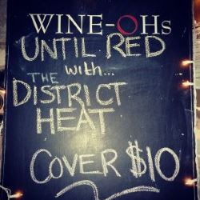
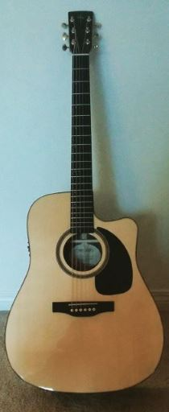
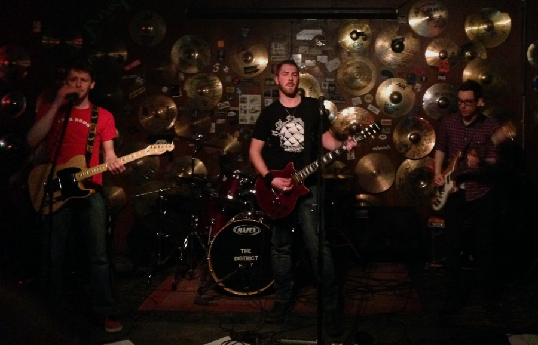
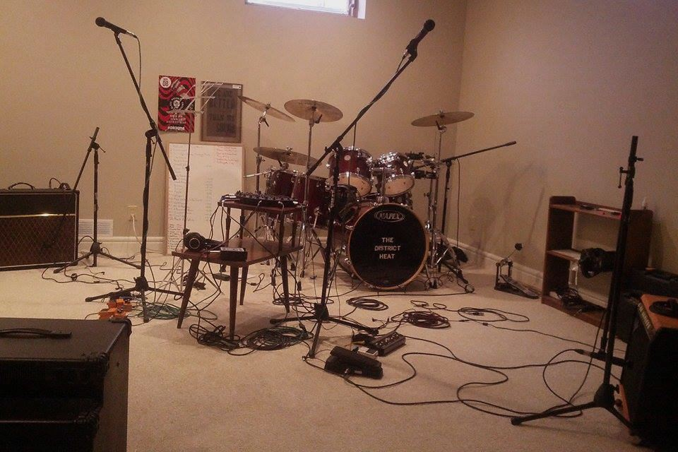
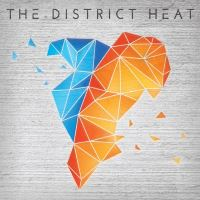

It is with a heavy heart that I write this week’s blog entry. A few months back we received some amazing news that we were selected to play a new festival here in town, Limelight Music Festival. This festival would serve to showcase this city’s vast talent pool and highlight what a great music scene Calgary has. We honestly get excited about just about any opportunity to play, however this one was special and we felt very privileged and humbled to be a part of it. While we have connections with some of the bands on the bill, many of them we had never met, and so we couldn’t wait to meet some new faces. In addition, not only would this provide an excellent opportunity to get some free press, but the festival was to be held at MacEwan Hall. I’ve seen so many mind blowing shows at that venue, and being told that we would be playing there was basically a dream come true.
As the date drew closer we awaited further details such as ticket sales and other promotional items but didn’t hear anything. Unfortunately we received word last month that due to some unforeseen circumstances the festival was not going to be able to come together this year. Organizing a festival is a massive undertaking and an enormous risk. While we are very disappointed, we understand the circumstances and the need to do it right.
Now, don’t let this post bum you out too much, because every cloud has its silver lining. While the festival will not be held this year, it has simply been postponed to 2016. The bands have been notified that we are all still to be included on the bill, despite the year delay. In addition, there will be some promotional shows this summer to showcase some of the bands that were to be involved. We’ll be sure to keep you all in the loop with details for those. SO, in summary, the festival will still happen, but now we get to play some supporting shows as well. Thanks for your patience and understanding and we hope to see your smiling faces at the Blind Beggar May 2. In the meantime, I’m going to go get some ice for my Mac Hall blue-balls. Until next time… ta ta!

So as some of you may know, this past Saturday we played a show at a downtown venue called Wine-Ohs with a band called Until Red. We’d never played there before, so while we had some ideas we weren’t quite sure what to expect. In the end, the show was a load of fun, and despite being a little different for us it was a great time.
We knew going in that Wine-Ohs was looking for something a little bit gentler than our usual performance, and that we’d be expecting to play for a slightly less Rock-and-Roll crowd. In appreciation of that we did pick a set list of originals and covers that wasn’t going to scare anyone off, but we still tried to deliver the energy and flare that comes with The District Heat brand. In the past, we’ve been a bit nervous about playing in front of unfamiliar crowds at strange new venues, but we’ve grown into enjoying the challenge and we were all able to relax and have a great time. We were even coaxed into showcasing a new song, Exploding Kittens, and the whole house seemed to be rocking along with us.
After we were done, Until Red got their chance on stage, and they put on an awesome show. Their Guitar-Drums-Keys three-piece and impeccable harmonies gave them a real signature sound; all three were great singers and musicians, and got their chance to shine. Each tune was easy listening that could really relax your shoulders, but they still held the audience’s ears the whole way through. Wine-Ohs was their only stop in Calgary on their Western Canada tour, but it’d be great to see them come back through here someday.
Altogether it was another great show and I can’t wait for the next one!
On Saturday (March 21st) we’re playing at Wine-Ohs, supporting the band Until Red on the Calgary stop of their Western Canada tour. Until Red is a self-described “70’s Inspired Yacht Rock” band from Brandon, Manitoba.
I’m excited for this show and feel a sort of kinship with the band - partly because I share my name with their hometown - but mainly because I grew up in Manitoba (Winnipeg, specifically) before moving to Calgary in 2012. In my experience, Manitobans draw a strong cultural identity not from their predominant agriculture industry or (mostly) 100 km/h highway speed limits, but rather from the diversity of their performing arts scenes. Some of my best memories are watching performances at the Winnipeg Folk Festival, the Winnipeg Ska & Reggae Festival, and of course, Folklorama.
If this post has a point, I guess it would be to please check out Until Red. They seem like inspired, Friendly Manitobans and have a couple free tracks available for streaming on their website - I really like “Wasted”, there are some nice piano textures and a great bass sound. I’ll leave a few links here. Should be a fun night!

Recently I've had a lot of people ask me about our song writing process. Do you all write together? Do you use sheet music? How do you come up with new ideas? I've talked to a lot of different artists and so far everyone kinda has their own little set of tricks. It seems to be a very personal thing. Don't let that discourage you though! I've got a few tips for you new song writers out there that might help you develop your own process.
Step 1: RELAX. It's all about comfort. Unless you're writing something akin to grunge-suicide-metal (in which case I'm sorry, I have absolutely no advice to share with you) being in a place that doesn't stress you out is crucial. Don't misunderstand me, I write most of my best songs about sad, depressing and difficult experiences (something about the intensity of the emotion really helps it all come out), but if I'm trying to channel that memory of crashing my bike and having all the others kids laugh at me (this was last week btw...), hanging out next to a fire alarm isn't going to be all that helpful. Personally, I find the shower to be one of the places where I'm most creative. The combination of the sound (which is very similar to something called Pink Noise) and the warmth alleviates all distractions and just let's my mind wander and play with new ideas almost on its own.
Step 2: DISTRACTION. When I want to write new lyrics or melodies, it's crucial that nothing else interferes. If I'm trying to write a new line to a guitar part I'm just learning I'm going to mess up a lot and constantly be pulling my mind out of the creative space. Instead, I just play a song or a beat I know really well and just sing to it. You could even record a chord progression on your phone and just loop it while you play around. Focus on the experience or feelings you want to write about and just let your mouth eject sound. Even if 95% of it is nonsense, I guarantee you'll hit that one line that is pure gold and it'll have taken you maybe 20 minutes. Now you'll have started solidifying the direction you want your song to take and you have a foundation to build on.
Step 3: PERSERVERENCE. Everyone says you can't force creativity, but you're never going to be creative if you can't put yourself in a place that allows that to happen. If I'm completely stumped on a new song I sometimes give it space and time to breath. Occasionally my brain will come up with something cool and I'll go off of that. More often than not, however, I'll force myself to sit down and come up with one or two new things. These don't have to be good and you don't need to use them, but now you've got something to work off of. I do this all the time and sometimes I only get one good word out of the three paragraphs I just wrote. I haven't lost anything not using those stanzas, but I've gained that word and sometimes that's all you need to get out of a slump.
Typically when we're trying to write a new song as a band one of us brings a riff or a chord progression to the table. In the past one of us would write a song almost to completion before bringing it to the band. However, this had quite a few problems. You could clearly tell that the song was written by someone instead of being written by The District Heat, it took forever before a song was ready to show to the band and it wasn't anything terribly original because only one person had wrote it.
We've come to find that we write our best music when we've got a groove to follow, but still have the freedom to do our own thing within that rhythm. Finding a group of people who can feed off of each other creatively is an amazing feeling. I'm not saying it's necessary (because there are some amazing solo writers out there), but when you can start playing a random riff and everyone immediately falls into place perfectly you just can't help but smile.
Hopefully some of that was useful. If you have questions don't hesitate to send us a message through any of our social media pages! Until next time,
Well, there you have it, another amazing time at Verns pub last night. It doesn’t seem to matter where we play or who we play for, I always have the most amazing time with my brothers up on that stage. When we plug in and start making our noise all of the problems of the world disappear and we get to live in the moment. It’s really quite difficult to quantify the feeling of total elation that we get each time we play. That and how unbelievably humbled we feel each time our fans come to see us. What we do brings us so much joy, and to be able to share that with others is really what it’s all about.

Last night included a very eclectic group of bands which always makes for an interesting evening. As usual, the feeling of comradery and support among the bands was strong. The night kicked off with Scratch Buffalo whose raw rock sound sent the night off with a bang. There is something about the beautiful simplicity of a three piece that has always held my heart. Next up was Vicariously Through Bruce. Not only were they totally rad dudes, but they did a set of kick ass mashups. Blending rap, rock, reggae, indie and even a healthy dose of Sabbath – a band after my own heart – they had the whole place dancing and smiling. Oh yeah, and they had Bruce Lee films playing on their bass drum… How fucking cool is that??? Sail With Kings followed, bringing their brand of foot-stomping, pirate-folk (ok, maybe no pirates but it sounds cool!). It’s the kind of music that really makes you want to swing a pint and sing along: two things I’m all too familiar with. After us, I’ve Taken a Lover closed out the night. They were added to the bill last minute, and I’m very glad that they were. While they did some great covers, it was their original songs that pulled me in. Great grooves, rockin vibes and lyrics with wit and attitude, you need to keep your eyes on these guys.
We busted out a few fresh songs last night that we’ve never played before. It’s a very special thing, playing something that no one has heard before. Plus there’s the added benefit of no one knowing whether or not you totally butchered the song ;) I can’t thank you all enough for coming out and showing us love and support. Without you guys we’re just four grown ass men pretending to be rock stars in Stew’s basement. You make the dream real for us. If you missed this show, fear not because like a bad case of herpes, we aren’t going anywhere. Until next time…
So, here it is. This is where the magic happens. When The District Heat came together, before we were called The District Heat, we needed to choose a location to make our loud noises and bad jokes. Unsurprisingly, the basement of my isolated home in the country was the location that would bother the least neighbours, so it was the obvious solution. With the exception of being a little out the way, it does pretty well. We have the room to set up and stay set up, so time spent travelling is made up on time saved moving equipment each practice. It’s also dimly light, which is forgiving on the hangovers that often accompany some of us on Saturday mornings.

While we’re on the topic, see that nucleus of wires and knobs on the table in the middle? That’s our new JamHub®! Instead of every instrument having to compete with the loudness of my drums against eardrums, we can all pop on some dense headphones and control our volume through this thing. All the guitars and vocals go through the input channels, and everyone can then tweak their own personal mix in balance with the mercifully muted drum kit. It makes it a lot easier to hear what everyone else is doing, and has the added benefit of saving our hearing. Pretty cool if I do say so myself.
Months ago, in between recording sessions, we spent a lot of time discussing imagery and colour schemes that could represent the album and define our aesthetic as a band. Thanks to everyone who has susbequently complimented us on the album cover and new merch designs! As a show of gratitude, I'm providing a peek behind the curtain by sharing the original artwork that eventually became the album cover.
As you can tell from the merits of the drawing, we hired an accomplished kindergarten-aged child as our concept artist; don't worry - he was locally grown, free-range, and 100% organic. I'm kidding of course. I'll admit that I drew this wholeheartedly with focus and intent, and while it certainly provided a strong creative foundation, I felt that our album deserved something more polished. It was only through the magic touch of graphics software (and some riveting photography of concrete) that the final result was achievable. So the next time you look at our album cover, take a second to remember its humble beginnings as a shaky-penciled, hastily-coloured drawing that would have been more comfortable on a refrigerator than fronting a collection of indie rock tunes.
You know how sometimes you enter a 50/50 draw at your local team’s sporting event or enter your name at a fine drinking establishment in order to win whatever themed item they have hanging above the counter with absolutely zero expectations of winning? But then you actually win. Well, this is that feeling times about one million and one.
A little while ago X92.9 was advertising a new Calgary festival that was going to go down for the first time this upcoming May. Staged at MacEwan Hall, the Limelight Music Festival is an all ages show aimed at promoting local talent. And we got in. HOLY SHIT! Every time I repeat that to myself I get so jazzed. I’m actually vibrating with giddiness a little bit as I type.
I distinctly remember receiving their response and already being in the mind set of, "Yeah, we didn’t make it, but at least we tried…" In fact I’m confident that I actually read the text incorrectly my first glance over as I didn’t want to dwell on the rejection for too long. Something flicked in my brain though, and after reading it a little more carefully I actually jumped out of my chair and double fist pumped the sky. So amazing to see confirmation that it's not just your parents and close friends who "like" your music, but an actual stranger liked us more than 68 other bands!
This is going to be one hell of a show. Tickets go on sale January 31st (this Saturday!). If you want more details you can check out the Limelight website.

It seems like we’ve been away for quite a while, however we have been hard at work on our debut album! Between writing, recording, editing, working on artwork, signing contracts and all the other behind the scenes work that goes into making a record we’ve been very busy. We are beyond excited to share the fruits of our labour with you. We’ll be selling the album, along with some other accompanying merchandise, at all of our upcoming shows. Can’t make it out? Don’t worry, the album is available online in places like Amazon and iTunes (check out the Music page)!
As you may have noticed we now have an official website, courtesy of our tech guru, Mr. Francis Levesque. On the website you’ll be able to find lyrics, bios, past and upcoming shows as well as this blog! We’ll update the blog with upcoming events, reflections on past events or just anything we feel the need to share with you to keep our amazing fans in the loop. As we grow as a band, the website will grow and change with us, so keep your eyes peeled for updates.
It’s been a long time, but damn, it feels good to be back. Let’s do this thing.